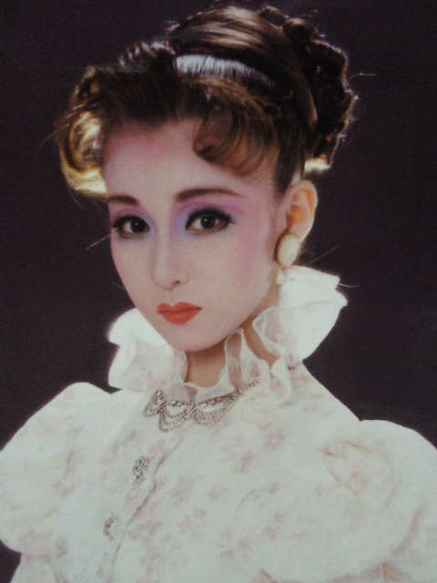

宝塚まとめ
麻乃佳代
元月組娘役トップスター
愛称：よしこ

涼風真世に憧れて入団し、見事涼風真世のと天海祐希の相手役を務めたラッキーガール。ラッキーガールなんて言葉を使うのは軽率じゃないか！と思うかもしれない。しかしこれにはちゃんと理由がある。
まず、組配属は5組中どの組に配属されるかは本人の運と素質であるし、配属が決まってもトップになれるかは実力と時期が揃ってのこと。 特に時期というのは大切で、男役よりも娘役のほうがシビアである。娘役トップ就任は研4～7が多く、いくら実力があってもその時期に他の娘役がトップを 務めていたなら就任は難しい。また、当時の男役トップスター任期は4年以上がざらであったし、それを考えるとトップ娘役前後に入団した娘役がトップに なれる確率は下がる。そして90年前後の月組と言えば、のちに雪組でトップ娘役となった紫ともや、その圧倒的歌唱力と芸域の広さで当時二番手として人気 を博した羽根知里や朝凪鈴が一時代に同じ組にいるという奇跡的に娘役の人材豊富な時代である。そんな激戦の時代になんと彼女たちを押しのけてわずか 入団2年目にしてのトップ娘役就任。もちろん実力ありきのことで、歌も上手、演技も上手、舞えば風にゆれる花のようであったが、何よりも彼女の運と 美貌がそうさせたと言わざるを得ない(美貌も実力かもしれないけど)。また憧れの涼風真世の相手役だけでなく、異例の大抜擢と歴代最高人気を誇った 天海祐希の相手役も務めたというのだ。これに関しては、経験が少ないのに抜擢されてしまった天海がよしこちゃんに残留をお願いしたらしいが、 何にせよ、実力だけでなく運も併せ持った娘役だったことには違いない。
余談だが、相手役の涼風真世は「最近お茶会で見かけないとおもったら相手役になってた」というような趣旨のコメントをしている。